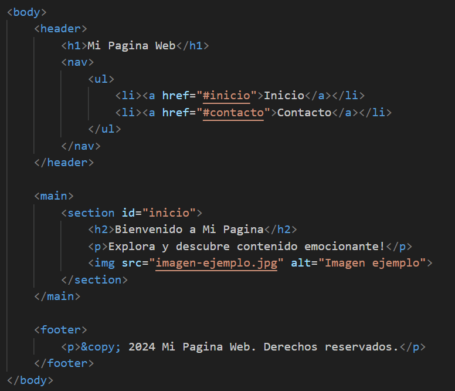
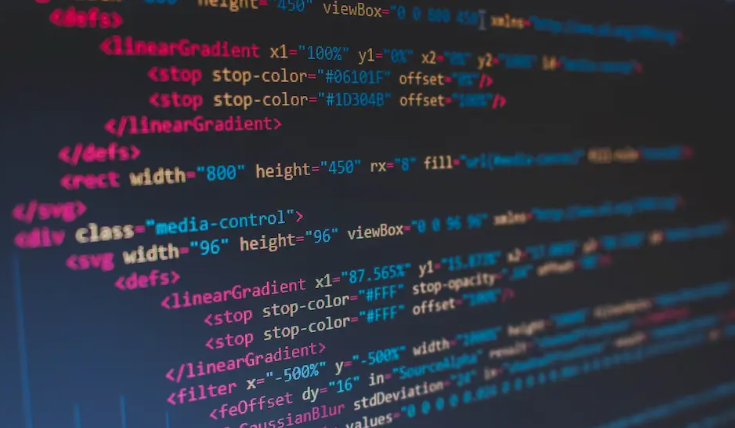
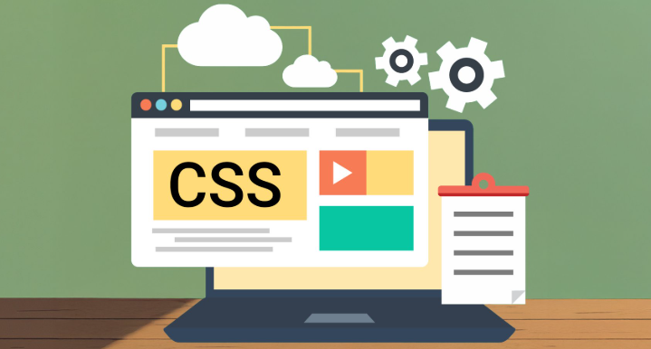

| Camilo Aguirre |
Proyectos ¿Quién soy? Inicio |
¿Quién soy?Mi nombre es Camilo Andres Aguirre Daza. Soy apasionado por el desarrollo web y me gusta el fútbol. Me gusta aprender nuevas tecnologías y crear páginas web modernas. |
|
Soy estudiante de programación web con conocimientos en HTML, CSS y JavaScript. Me gusta desarrollar sitios web atractivos, organizados y funcionales, poniendo en práctica buenas estructuras y estilos modernos. Actualmente continúo aprendiendo y creando proyectos para mejorar mis habilidades en desarrollo web. En mi tiempo libre disfruto jugar fútbol y explorar nuevas tecnologías relacionadas con la programación. -Camilo Aguirre |
|
 Proyecto 1 Pagina web desarrollada con HTML, enfocada en practicar la estructura basica de una pagina web. Incluye el uso de etiquetas semanticas, enlaces, imágenes y listas para organizar el contenido de manera clara y accesible. |
 Proyecto 2 Diseño de una página web utilizando tablas HTML para organizar y estructurar el contenido. Este proyecto permitió comprender cómo se distribuía la información en los primeros diseños web y cómo manejar filas, columnas y celdas. |
 Proyecto 3 Pequeño sitio web donde practiqué CSS para aplicar estilos visuales a una página. Incluye personalización de colores, tipografías, márgenes y alineación de elementos para mejorar la presentación y el diseño del sitio. |
Proyecto 4 Sitio web personal donde presento algunos de mis hobbies e intereses. Este proyecto combina estructura HTML y estilos básicos para crear una página informativa con contenido visual y secciones organizadas. |